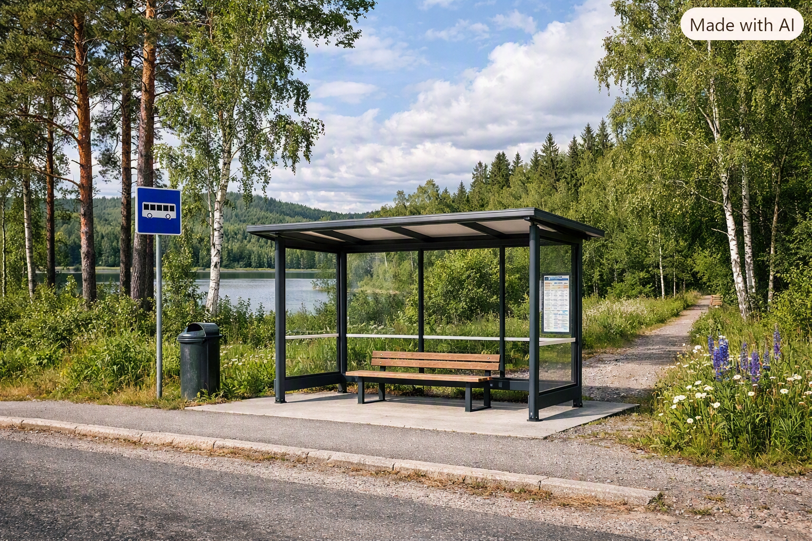

Kollektivtrafiken är en viktig del för ett mer hållbart samhälle. Genom att åka med exempelvis buss, tåg eller tunnelbana kan fler människor resa tillsammans och på så sätt minska antalet enskilda bilresor.
Via denna webbsida kan du få mer information och kunskap om tre olika färdsätt inom kollektivtrafiken som vi valt att fördjupa oss i, samt deras miljöpåverkan.
